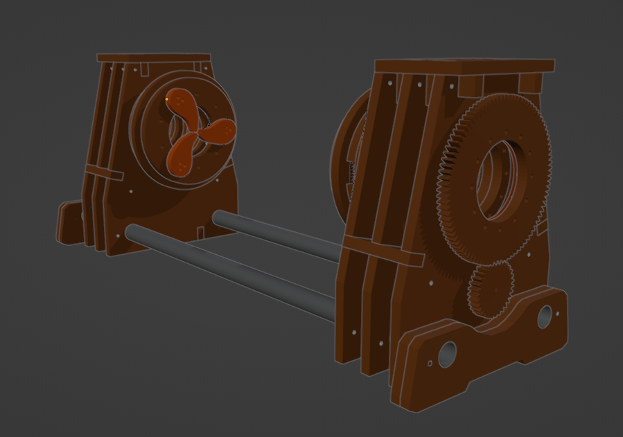
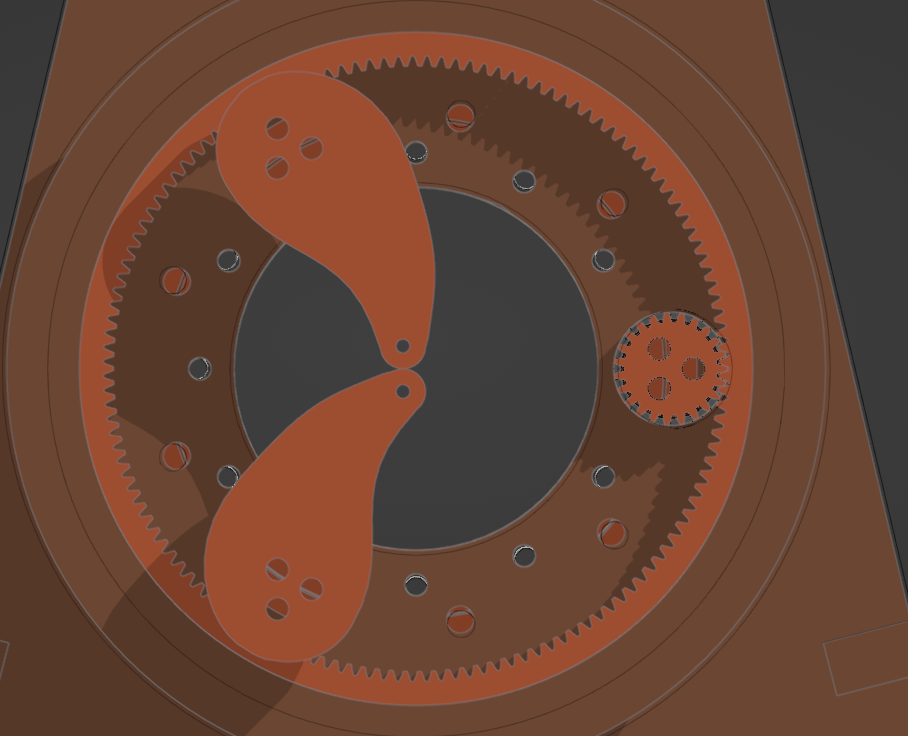
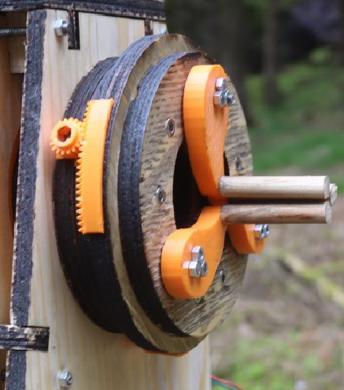
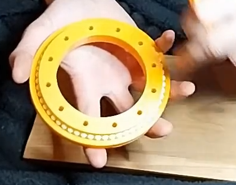
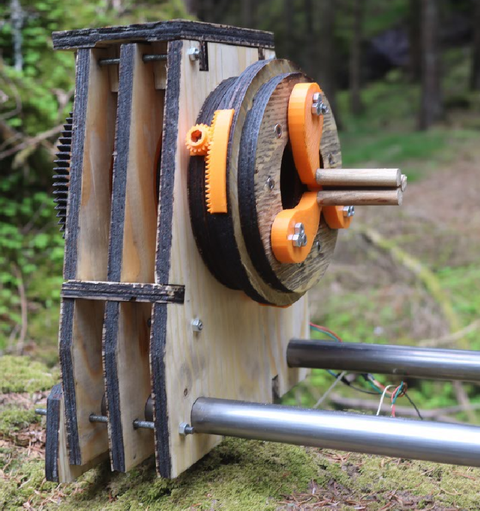
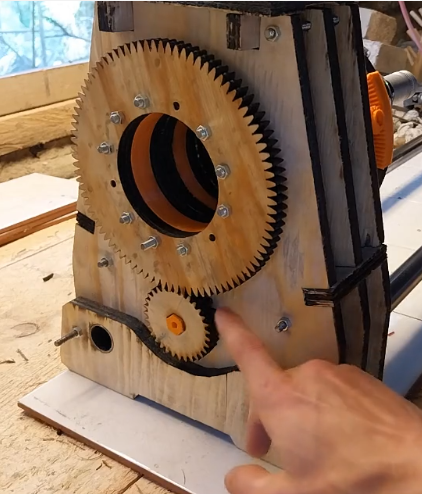

Lathe
A lathe is crucial for precision in your lampworking. Certain tube, glass to metal seals, feel close to impossible without. But it's a niche tool, and thus pricey. But many years ago I made a prototype glass lathe, mostly out of 3D printed parts. The concept was sound, there isn't really any axial load, and the RPM's are not that high at least compared to a wood or metal lathe. The prototype proved the concept. But there was room for improvements, So a complete redesign was done in Blender
Using a planetary gear mechanism for the chuck, enables self centering, as well as a large feedthrough hole. But at the cost or reduced clamping force. 
Now if you plan on using the lathe a lot, it should probably be modified in order to use a metal bearing. But for the occasional lampworker I've designed a 3D-printable bearing that uses air-soft bb's for bearing balls.
The frame is made from three laser-cut sheets of 12mm plywood. Alternatively, use 2x6mm and glue together if your laser does not have the power for 12mm. The gear-train was made from laser-cut plywood, with a 3D-printed coupling for the stepper.Now if you wish to make your own. here is the SVG’s
Cut SVG's
And the STL’s for 3D printing
3D prints
It should be mentioned that there are some minor issues. The bevel gears, used for tensioning, occasionally deflects and skips teeth.
There is also a bit of interference with the planetary gears and the ring, but it improves greatly when worn in.
The lathe is also missing a tail-stock, but that will come later. As well as more info and a parts list.